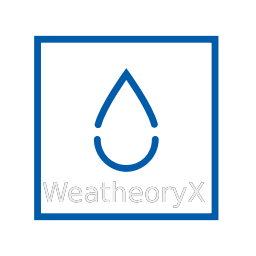

Site Name:
WeatheoryX
Domain:
weatheoryx.com
Site Purpose
WeatheoryX’s purpose is to provide accurate weather results in a very user friendly environment. It is WeatheoryX’s goal to enable those in the harshest climates with the information they need, this will be accomplished through mobile availability and responsivity. Secondary to this is WeatheoryX’s implementation of sources which aid the audience in planning, knowledge, and additional resources for backcountry trips, first-responder emergencies and more.
Logo
If my header doesn't work out with the first logo, I've changed the color and added a second logo for that circumstance.
